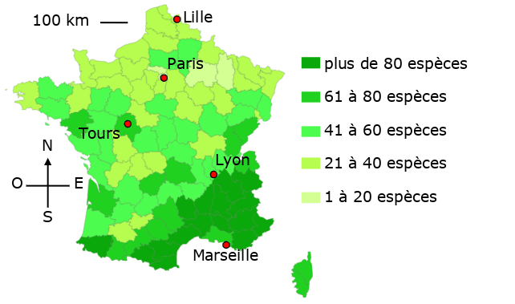

Exemple de consigne
À partir de la carte, décrire la répartition des fourmis en France.
Exemple de carte
Nombre d'espèces de fourmis par département en France

Exemple de réponse
En France, on trouve des fourmis dans tous les départements. Mais, dans l’ensemble, plus on va vers le Nord, plus le nombre d’espèces identifiées diminue. Par exemple, dans les départements du Sud, près de Marseille, on trouve plus de 80 espèces de fourmis. Environ 1 000 km au Nord, près de Lille, par contre, on compte entre 21 et 40 espèces différentes. En Indre et Loire, notre département, il y a entre 61 et 80 espèces de fourmis. C’est plus que dans les départements autour. En région parisienne, le nombre d’espèces est très faible : moins de 20.